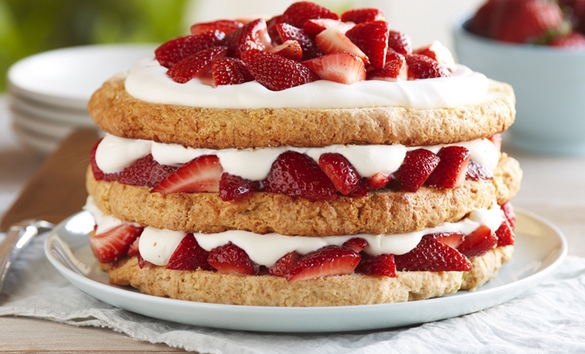

Песочные пирожные

Песочные пирожные – из рассыпчатого теста в виде корзиночек, лепешек, колец, полумесяца. Песочные пирожные изготавливают из муки, сливочного масла, сахара, яиц. Выпускаются песочно-кремовые, желейные, фруктовые, шоколадные и другие песочные пирожные.
Next